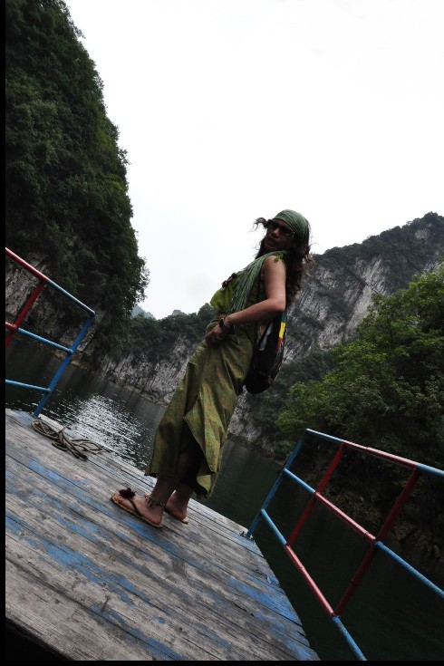

[转寄/推荐][转贴][删除][修改][设置可RE属性][上一篇][返回讨论区][下一篇][回文章][同主题列表][同主题阅读][从这里展开]
发信人: yahuo (牙火虫), 信区: outdoor
标 题: 不要迷恋姐，姐让你吐血
发信站: 饮水思源 (2010年06月02日02:20:14 星期三)
六月一日，俺自己的节日。没人给俺过节，俺就自己过。自娱自乐。
凌晨两点多，突然，桂林这座城市，姐不想呆了。于是，挥一挥衣袖，没带走一颗饭粒，
华丽滴滚蛋。管他半夜还是三更，管他是不是风雨交加。嘿嘿，抛弃一座城市的感觉真爽
！走姐们的路，让他们傻眼去吧。
凌晨4：29分，火车准时驶离这座传说中的山水甲天下城市。一上车，俺就迫不及待滴进入
了梦乡，期待艳遇一个帅哥！
醒来时已是6：40，哇噻，对面果然横陈两头。俺先不对这两头帅哥品头论足，切换镜头吧
。
连日的暴雨，致使柳州前方来宾段铁路被洪水淹没，列车被困将近11小时（中间略去数千
字）。本来计划着赶到南宁天亮的，这下好了，到了南宁，已是晚上九点。
前面说到的两头帅哥中的一头在南宁前一站下了，一头跟俺一样到南宁。这一头自说自话
地跟俺说让俺把开房的发票给他，他请客 。 俺没吭声，那家伙就一路屁颠屁颠地跟在俺
屁股后面一起出站。嘿嘿，当俺默许了呢。
天公很是作美，暴雨铺天盖地滴下着。哈哈，好家伙，这头没带伞，想跟俺共伞呢。
“伞呢？快撑伞。”
“没呢，我只有雨衣。”俺故意没用雨伞，自顾自穿俺的雨衣。心里盘算着怎么收拾这家
伙。
“我们到打车吧。”
“这么大的雨，我不想走了，想在附近住下来。”说完，俺就故意这里窜那里窜，假装找
旅馆。嘿嘿，跟俺玩，差远了，淋你个落汤鸡！俺心里乐开了花
儿童节，啥礼物也木收到，还被困在那鸟不生蛋，鸭不打鸣，猪不爬树，人不长脑的鬼地
方11小时，多憋闷啊。哈哈，老天终于开眼，请允许俺邪恶地一笑。
（中间再次略去数千字）
总之，这家伙一路连滚带爬跟着俺来到到迎宾饭店滴门口，估计，痛并兴奋着吧。估计，
打死他也想不到姐们会潇洒地挥一挥手对他说：谢谢您护送啦，886。
嘿嘿，长猪样不是你的错，可是，长猪样还想玩姐们，这就是您的不对了。
送这头帅哥一句话：不要迷恋姐，姐让你吐血！
 screen.width - 200){this.width = screen.width - 200}">
|
[转寄/推荐][转贴][删除][修改][设置可RE属性][上一篇][返回讨论区][下一篇][回文章][同主题列表][同主题阅读][从这里展开]